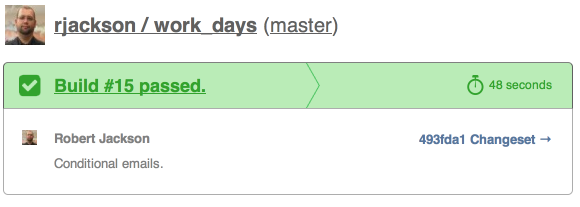
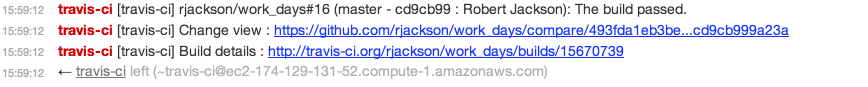

# The Rundown (on Travis) <img style="float: right" src="images/travis.gif"/> Robert Jackson <p> <div>github: rjackson</div> <div>twitter: rwjblue</div> </p> 2013-12-19 ??? The point of this presentation is to give you a good overview of the things that Travis CI is capable of. --- # What can we do with Travis CI? * Running Tests * Across Many Platforms * Across Many Dependency Combinations * Deployment * Benchmark **caveat emptor** * TAKE OVER THE WORLD ??? Benchmarking on a VM is VERY inaccurate. --- # LET'S DO IT!!! * Sample project: rjackson/work_days * Super simple setup: ``` language: ruby script: rspec ``` https://travis-ci.org/rjackson/work_days/builds/15621752 ??? Commands Executed: * `git clone --depth=50 --branch=master <REPO>` * `git checkout -qf <SHA>` * `rvm use default --install --binary --fuzzy` * `bundle install` * `rspec` --- # Thats great, but I want MOAR RUBIES!!! * As easy as specifying each version: ``` language: ruby rvm: - 2.1.0 - 2.0.0 - 1.9.3 - jruby-19mode script: rspec ``` https://travis-ci.org/rjackson/work_days/builds/15622427 ??? Runs previous steps on all rubies listed. --- # Whatever, I've got custom setup steps. * Simply specify your install steps: ``` language: ruby rvm: - 2.1.0 - 2.0.0 - 1.9.3 - jruby-19mode before_install: - sudo apt-get update && sudo apt-get install git - gem install bundler --pre script: rspec ``` https://travis-ci.org/rjackson/work_days/builds/15624742 ??? Run the same as last time, but also run the following before rspec: * `sudo apt-get update && sudo apt-get install git` * `gem install bundler --pre` --- # Specifying custom environment variables: ``` language: ruby rvm: - 2.1.0 - 2.0.0 - 1.9.3 - jruby-19mode before_install: - sudo apt-get update && sudo apt-get install git - gem install bundler --pre script: rspec env: global: - AWESOME_VAR=hell-yeahz - WHAT_EVES=shut-up ``` https://travis-ci.org/rjackson/work_days/builds/15665245 ??? Note that these are global variables. They do not create mutiple builds. --- # A word about matrix builds. * Every combination of: * Runtime (Ruby/Node/Python/etc version) * Environment Variable * Be Responsible ??? Very easy to get into a situation where you are testing with 8+ builds. --- # How do we skip a build? ``` language: ruby rvm: - 2.0.0 - jruby-19mode script: rspec env: - AWESOME_VAR=hell-yeahz - WHAT_EVES=shut-up matrix: exclude: - rvm: jruby-19mode env: AWESOME_VAR=hell-yeahz - rvm: 2.0.0 env: WHAT_EVES=shut-up ``` https://travis-ci.org/rjackson/work_days/builds/15625669 --- # How do we allow certain failures? ``` language: ruby rvm: - 2.0.0 - jruby-19mode script: rspec matrix: allowed_failures: - rvm: jruby-19mode ``` https://travis-ci.org/rjackson/work_days/builds/15626132 --- # Build Lifecycle Hooks * before_install * install * before_script * script * after_success/after_failure * after_script ??? Any non `after` script exiting non-zero indicates a failure. As we saw earlier any of these can be an array. --- # Build Status Notifications * Email * IRC * Campfire * HipChat * Flowdock * Webhook --- # Setup email notifications: ``` language: ruby rvm: - 2.1.0 - 2.0.0 - jruby-19mode script: rspec notifications: email: - robert.w.jackson@me.com ``` https://travis-ci.org/rjackson/work_days/builds/15669611 ??? All emails will be sent to the addresses listed. ---  --- # Disable email notifications: ``` language: ruby rvm: - 2.1.0 - 2.0.0 - jruby-19mode script: rspec notifications: email: false ``` https://travis-ci.org/rjackson/work_days/builds/15669971 --- # Conditional email notifications: ``` language: ruby rvm: - 2.0.0 script: rspec notifications: email: on_success: always on_failure: always ``` https://travis-ci.org/rjackson/work_days/builds/15670128 ??? on_success defaults to change on_failure defaults to always --- # IRC Notifications ``` language: ruby rvm: - 2.0.0 script: rspec notifications: irc: - "chat.freenode.net#rwjblue" ``` Sample:  https://travis-ci.org/rjackson/work_days/builds/15670739 --- # Conditional IRC Notifications ``` language: ruby rvm: - 2.0.0 script: rspec notifications: irc: channels: - "chat.freenode.net#rwjblue" on_success: always on_failure: always ``` https://travis-ci.org/rjackson/work_days/builds/15671080 ??? on_success defaults to always on_failure defaults to always --- # Custom IRC Notifications ``` language: ruby rvm: - 2.0.0 script: rspec notifications: irc: channels: - "chat.freenode.net#rwjblue" template: - "%{repository}#%{build_number} (%{branch} - %{commit} : %{author}): %{message}" - "Change view : %{compare_url}" - "Build details : %{build_url}" ``` ??? You can interpolate the following variables: repository: your GitHub repo URL build_number: build number branch: branch build name commit: shortened commit SHA author: commit author name message: travis message to the build compare_url: commit change view URL build_url: URL of the build detail --- # Webhooks ``` language: ruby rvm: - 2.0.0 script: rspec notifications: webhooks: http://your-domain.com/notifications ``` ??? The URL provided will be posted to with a JSON payload including all of the build details (including pass/fail). https://gist.github.com/svenfuchs/1225015 --- # Webhook Authorization Header ```ruby require 'digest' Digest::SHA2.hexdigest('rjackson/work_days' + TRAVIS_TOKEN) ``` ```python from hashlib import sha256 sha256('rjackson/work_days' + TRAVIS_TOKEN).hexdigest() ``` --- # Webhook Post Data (1 / 4) ```javascript payload": { "id": 1, "number": 1, "status": null, "started_at": null, "finished_at": null, "status_message": "Passed", "commit": "62aae5f70ceee39123ef", "branch": "master", "message": "the commit message", "compare_url": "https://github.com/svenfuchs/minimal/compare/master...develop", .............. ``` https://gist.github.com/svenfuchs/1225015 --- # Webhook Post Data (2 / 4) ```javascript payload": { ................. "committed_at": "2011-11-11T11: 11: 11Z", "committer_name": "Sven Fuchs", "committer_email": "svenfuchs@artweb-design.de", "author_name": "Sven Fuchs", "author_email": "svenfuchs@artweb-design.de", "repository": { "id": 1, "name": "minimal", "owner_name": "svenfuchs", "url": "http://github.com/svenfuchs/minimal" }, "matrix": [ ``` https://gist.github.com/svenfuchs/1225015 --- # Webhook Post Data (3 / 4) ```javascript payload": { "matrix": [ { "id": 2, "repository_id": 1, "number": "1.1", "state": "created", "started_at": null, "finished_at": null, "config": { "notifications": { "webhooks": ["http://evome.fr/notifications", "http://example.com/"] } }, "status": null, ................. ``` https://gist.github.com/svenfuchs/1225015 --- # Webhook Post Data (4 / 4) ```javascript { ............... "log": "", "result": null, "parent_id": 1, "commit": "62aae5f70ceee39123ef", "branch": "master", "message": "the commit message", "committed_at": "2011-11-11T11: 11: 11Z", "committer_name": "Sven Fuchs", "committer_email": "svenfuchs@artweb-design.de", "author_name": "Sven Fuchs", "author_email": "svenfuchs@artweb-design.de", "compare_url": "https://github.com/svenfuchs/minimal/compare/master...develop" } ``` https://gist.github.com/svenfuchs/1225015 --- # Campfire Notifications ``` language: ruby rvm: - 2.0.0 script: rspec notifications: campfire: [subdomain]:[api token]@[room id] ``` --- # Flowdock Notifications ``` language: ruby rvm: - 2.0.0 script: rspec notifications: flowdock: [api token] ``` --- # HipChat Notifications ``` language: ruby rvm: - 2.0.0 script: rspec notifications: hipchat: [api token]@[room name] ``` --- # Securing Secrets * Each repo is given a key pair: https://api.travis-ci.org/repos/rjackson/work_days/key * Use the public key to encrypt the secret data in your `.travis.yml`. * Use `secret: <ENCRYPTED_STRING>` --- # Let me do that for you: ```sh $ gem install travis $ travis encrypt SOMEVAR=secretvalue ``` Then copy and paste into your `.travis.yml`. To avoid copying & pasting: ```sh $ travis encrypt api_token_value --add \ notifcations.flowdock ``` --- # SHIP IT! ## Deployment Options * Heroku * S3 * NPM * RubyGems * Custom * Many others... --- # Heroku Deployment ``` language: ruby rvm: - 2.0.0 script: rspec deploy: provider: heroku api_key: "YOUR API KEY" ``` Populate the secure API key: ``` travis encrypt $(heroku auth:token) --add deploy.api_key ``` --- # Heroku Deployment w/Custom App Name ``` language: ruby rvm: - 2.0.0 script: rspec deploy: provider: heroku api_key: "YOUR API KEY" app: something-other-than-your-repo-name ``` --- # Heroku Deployment per Branch ``` language: ruby rvm: - 2.0.0 script: rspec deploy: provider: heroku api_key: "YOUR API KEY" app: master: dont-touch-the-red-button staging: not-so-sure-about-this production: ship-it-city ``` --- # Heroku Deployment w/After Deploy ``` language: ruby rvm: - 2.0.0 script: rspec deploy: provider: heroku api_key: "YOUR API KEY" run: - "rake db:migrate" - "rake cleanup" ``` --- # S3 Deployment ``` language: ruby rvm: - 2.0.0 script: rspec deploy: provider: s3 access_key_id: "YOUR AWS ACCESS KEY" secret_access_key: "YOUR AWS SECRET KEY" bucket: "S3 Bucket" skip_cleanup: true ``` ```sh $ travis encrypt ... --add deploy.secret_access_key $ travis encrypt ... --add deploy.access_key_id ``` ??? OR ``` $ travis setup s3 ``` --- # S3 Deployment on Tags ``` language: ruby rvm: - 2.0.0 script: rspec deploy: provider: s3 access_key_id: "YOUR AWS ACCESS KEY" secret_access_key: "YOUR AWS SECRET KEY" bucket: "S3 Bucket" skip_cleanup: true 'on': tags: true ``` 'on' - WTF? https://gist.github.com/rjackson/6700004 --- # S3 Deployment Custom Folders ``` language: ruby rvm: - 2.0.0 script: rspec deploy: provider: s3 access_key_id: "YOUR AWS ACCESS KEY" secret_access_key: "YOUR AWS SECRET KEY" bucket: "S3 Bucket" skip_cleanup: true local-dir: some-non-root-dir upload-dir: something-other-than-default ``` Will only upload the `/build` directory contents to S3. --- # NPM Deployment ``` language: js ooe4 deploy: provider: npm email: "YOUR EMAIL ADDRESS" api_key: "YOUR API KEY" on: tags: true ``` ```sh travis encrypt ... --add deploy.api_key ``` --- # RubyGems Deployment ``` language: ruby rvm: - 2.0.0 script: rspec deploy: provider: rubygems api_key: "YOUR API KEY" on: tags: true ``` ```sh travis encrypt --add deploy.api_key ``` --- # RubyGems Deployment w/Custom Name ``` language: ruby rvm: - 2.0.0 script: rspec deploy: provider: rubygems api_key: "YOUR API KEY" gem: my-gem-name on: tags: true ``` --- # RubyGems Deployment -- Prereleases ``` language: ruby rvm: - 2.0.0 script: rspec deploy: provider: rubygems api_key: "YOUR API KEY" ``` ```ruby # in your gemspec (with less wrapping) if ENV['TRAVIS'] s.version = "#{s.version}-alpha-" + ENV['TRAVIS_BUILD_NUMBER'] end ``` --- # Custom Deployment Script ``` language: js node_js: - 0.10 script: grunt test after_success: - grunt deploy ``` https://travis-ci.org/rjackson/ember-live-api/builds/15688141 --- # I feel the need, the need for speed! ## Tricks/Tips to speed up your builds... * Cache packages. #1 speedup is not compiling C extensions. * Eliminates RubyGems SSL / Timeout issues. * Installing `nokogiri` alone takes 88 seconds! * Remove non-essential gems from `Gemfile`/`gemspec`. * Use matrix builds to speed up tests. --- # Caching Options * Baked in with Private Travis: ``` language: ruby cache: bundler # enables built-in caching ``` * https://github.com/Fingertips/WAD * BASH Scripts --- # Caching with WAD * Get the script: ```bash $ curl -o bin/wad \ https://raw.github.com/Fingertips/WAD/master/bin/wad $ chmod +x bin/wad ``` Then use `bin/wad` instead of `bundle install`: ``` language: ruby install: bin/wad script: rspec ``` --- # Cache with Curl, BASH, and OpenSSL * s3-put - https://github.com/emberjs/ember-dev/blob/master/bin/s3-put * cached-bundle - https://github.com/emberjs/ember-dev/blob/master/bin/cached-bundle